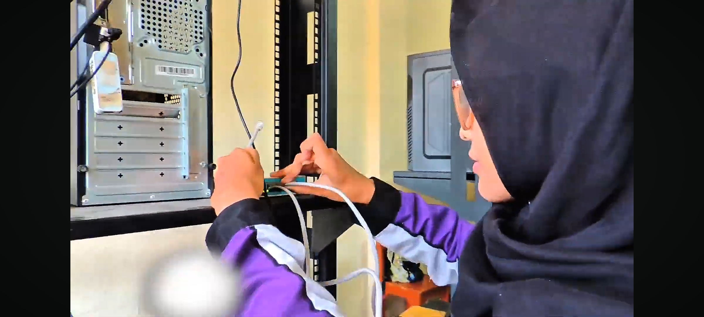
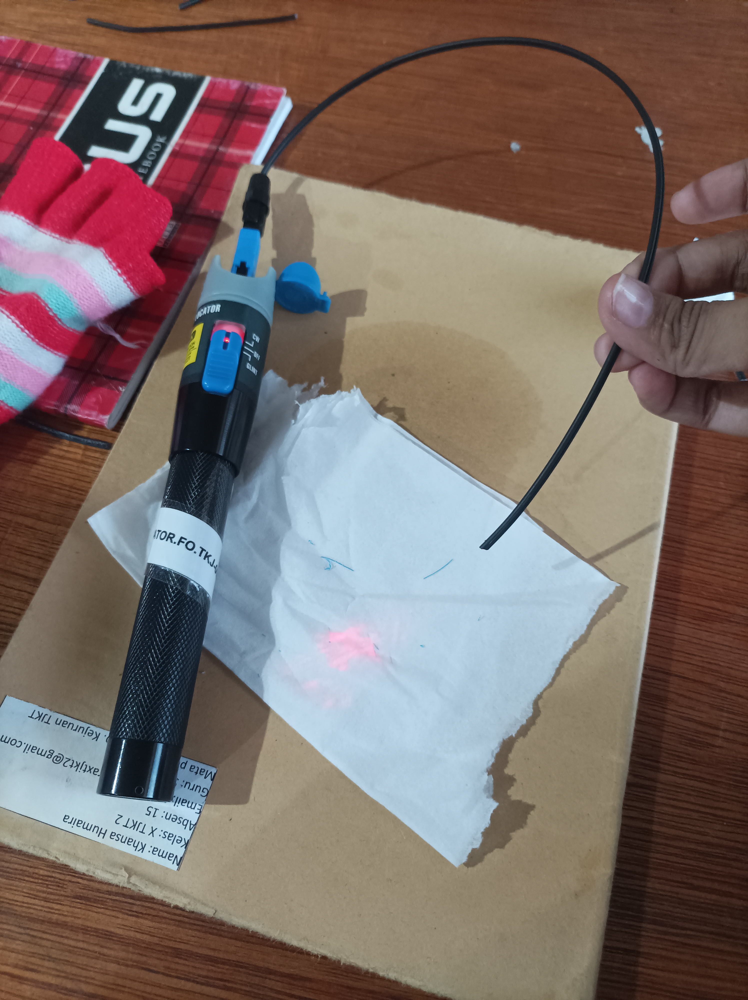
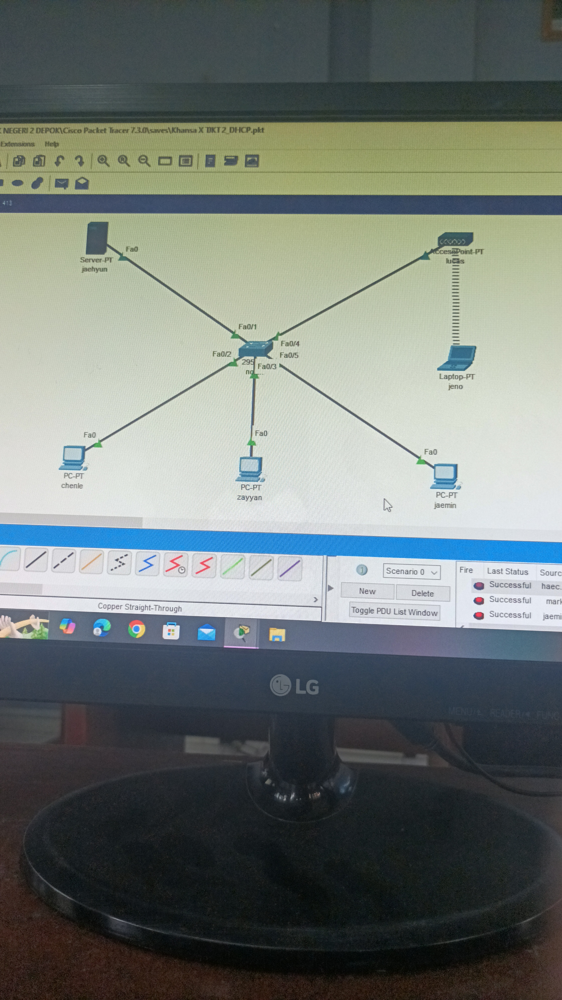
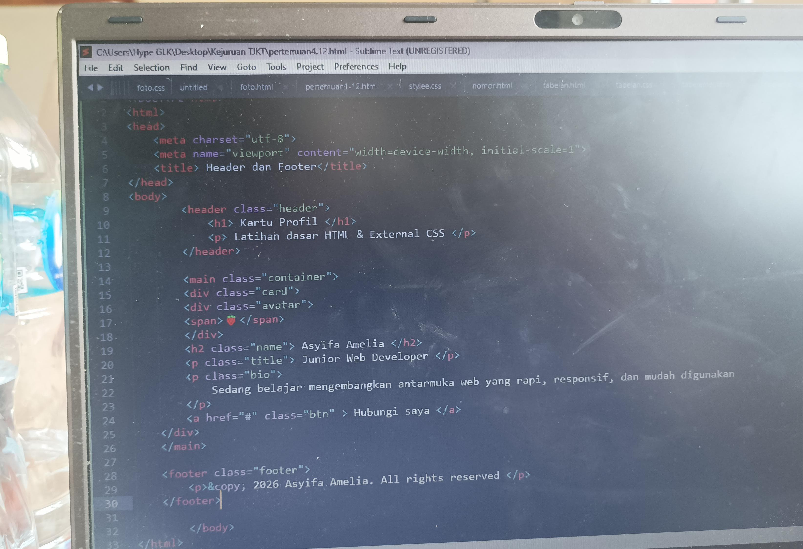
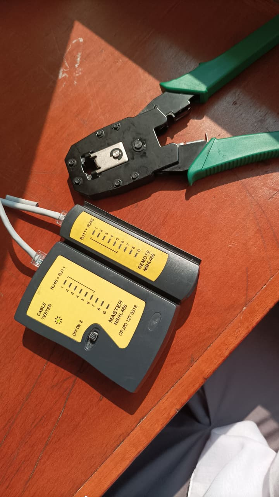

Jaringan & Infrastruktur
SubnettingCrimping LANConfig Access Point
Halo, aku 👋
Siswi Teknik Komputer dan Jaringan (TKJ) | Tech & Network Enthusiast
Siswi TKJ SMK Negeri 2 Depok dengan minat utama pada infrastruktur jaringan dan keamanan siber. Terbiasa mengonfigurasi jaringan LAN, MikroTik RouterOS, serta simulasi Cisco Packet Tracer. Cepat beradaptasi, proaktif, dan siap belajar hal baru! ✨
Hard skills yang sedang aku asah
Mendokumentasikan program kerja serta merancang materi publikasi visual untuk media sosial Rohis.
Cisco Networking Academy
Agustus 2026Aguna Course
Juni 2025Komdigi Digital Talent Scholarship
Juni 2026Klik foto untuk memperbesar




